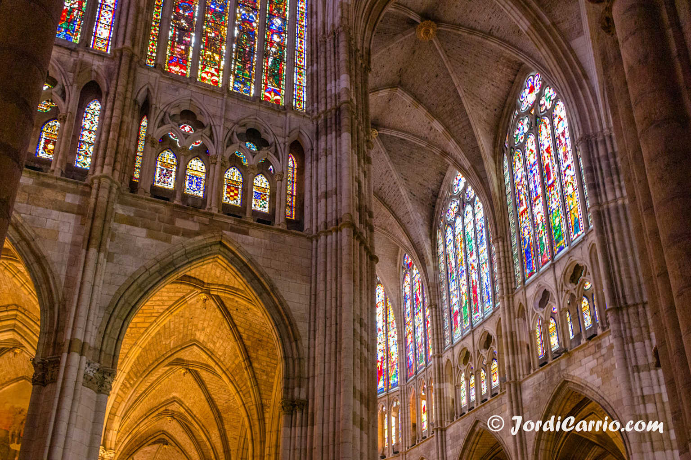
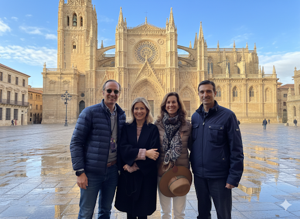
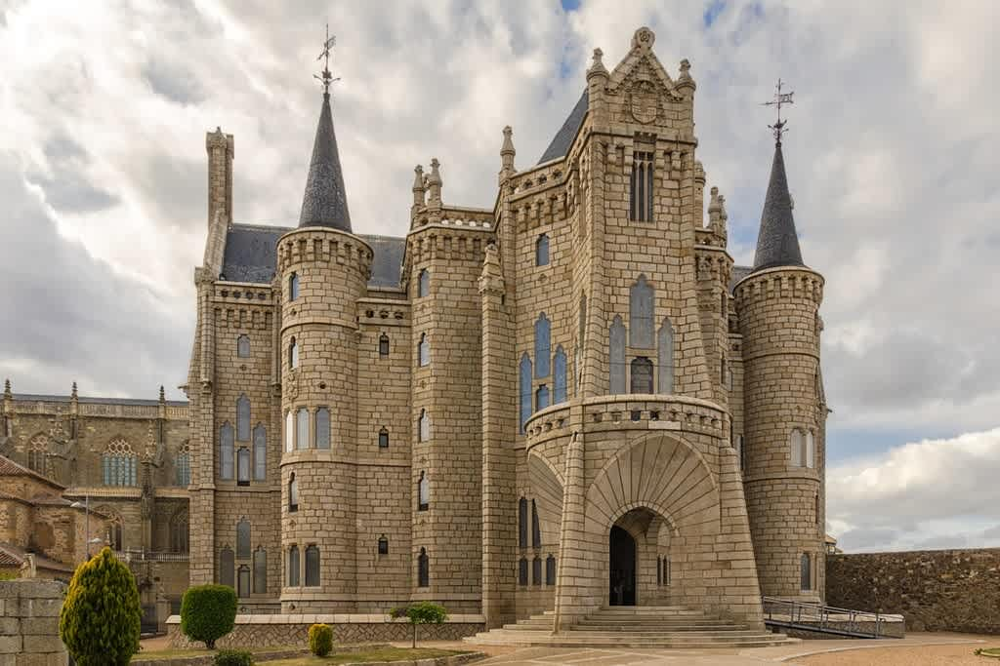
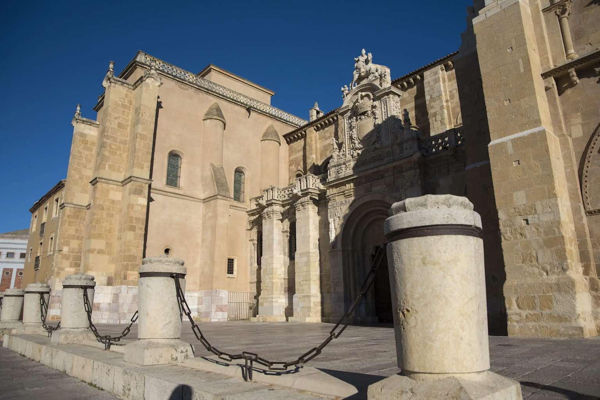

Viernes 13 — Llegada
🚗 17:00 — Salida de Madrid
Comenzamos nuestro viaje hacia la histórica ciudad de León. Prepárate para una experiencia inolvidable en el corazón de Castilla y León.
🏨 20:30 — Llegada al Hostal de San Marcos
Nos alojamos en el emblemático Hostal de San Marcos, un edificio histórico en el centro de León.
Hostal de San Marcos — Lugar de alojamiento
🍽️ 21:45 — Cena en Casa Mando
Casa Mando — Restaurante tradicional leonés
Después de la cena, disfrutaremos de un agradable paseo de 20 minutos por el centro histórico, pasando por la Plaza de San Marcelo donde veremos la Casa Botines y el Palacio de los Guzmanes.
Lo que verás en el paseo
- Plaza de San Marcelo
- Casa Botines
- Palacio de los Guzmanes
Sábado 14 — Exploración completa
⛪ 10:00 — Visita a la Catedral de León
Comienza nuestro día con la visita a la impresionante Catedral de León, conocida como la "Pulchra Leonina". Bordeando la Basílica de San Isidoro, pasamos por Santa Marina la Real para alcanzar este magnífico templo gótico.

Catedral de León — Joya del arte gótico

¡Nosotros frente a la majestuosa Catedral!
Curiosidades de la Catedral
- Obra maestra del gótico español
- Construcción iniciada en 1205
- Vidrieras de incomparable belleza
🚗 11:30 — Salida hacia Astorga
Viaje de 50 minutos hasta la ciudad de Astorga, famosa por su patrimonio histórico, arquitectónico y culinario.
🏛️ Visita a Astorga — Catedral y Palacio de Gaudí
Exploramos la ciudad de Astorga, visitando su Catedral y el espectacular Palacio Episcopal diseñado por Antoni Gaudí, una verdadera joya arquitectónica.

Palacio Episcopal de Gaudí en Astorga
🍽️ 13:45 — Comida en Castrillo de los Polvazares
Restaurante Coscolo — Comida tradicional maragata
Nos dirigimos a Castrillo de los Polvazares, un pueblo de gran encanto donde disfrutaremos del famoso "Cocido Maragato". Después de comer, pasearemos por el pueblo para saborear su atmósfera medieval.
Castrillo de los Polvazares — Pueblo con encanto histórico
⛪ 19:30 — Misa en la Iglesia de Santa María del Mercado
Regresamos a León para asistir a la misa en la Iglesia de Santa María del Mercado, uno de los templos más significativos de la ciudad, que solo se pueden visitar antes y después de la liturgia.
🍷 Después de la misa — Paseo por el Barrio Húmedo
Por la noche, disfrutaremos de paseos y vinos en el famoso Barrio Húmedo de León, conocido por sus tradicionales tabernas y ambiente acogedor.
Domingo 15 — Despedida
🕯️ 10:15 — Visita guiada a San Isidoro de León
Comenzamos con una visita guiada a la Real Basílica de San Isidoro, uno de los templos más importantes del arte medieval español. Nos deleitaremos en el Panteón de Reyes y su museo recién reinaugurado.

Basílica de San Isidoro — Joya del arte medieval
Tesoros de San Isidoro
- Panteón de Reyes de León
- Museo de arte románico
- Arquitectura prerrománica y románica
🏛️ 11:30 — Recorrido por plazas y edificios civiles
Paseo por las principales plazas y edificios civiles históricos de León descubriendo la riqueza arquitectónica y la historia que encierran las calles del casco antiguo.
🏨 13:30 — Visita al Hostal de San Marcos y comida
Regresamos al Hostal de San Marcos para disfrutar de una comida ligera antes de regresar a Madrid. Aprovecharemos estas últimas horas para admirar la belleza de este histórico convento convertido en parador con muchos rincones secretos y una reforma espectacular recién inaugurada.
Recuerdos para llevar
- La majestuosidad de la Catedral de León
- La arquitectura única de Gaudí en Astorga
- El sabor del Cocido Maragato
- La historia medieval de la Maragatería
- La hospitalidad leonesa